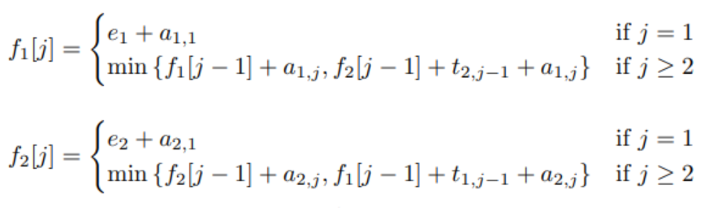
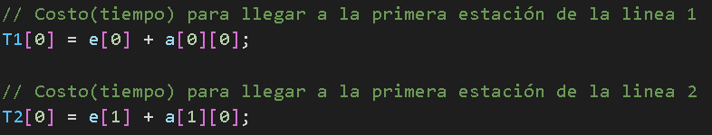
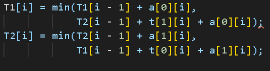

Introduccion al problema de líneas de producción
El problema en esencia dicta que:
- Una fábrica de automóviles tiene dos líneas de montaje, cada una con n estaciones.
- Una estacion se indica con S, i, j donde i es 1 o 2 e indica la línea de montaje en la que se encuentra cada estacion, y j indica el número de cada estación. El tiempo empleado por estacion se indica mediante a i,j.
- Cada estacion está dedicada a algún tipo de trabajo como montaje de motores, montaje de carrocerías. pintura, etc. Por lo tanto, el chasis de un automovil debe pasar por cada una de las n estaciones en orden antes de salir de fábrica. Las estaciones paralelas de las dos líneas de montaje realizan la misma tarea. Después de pasar por la estación S,i, j continuará hasta la estación S, i, j + 1 a menos que decida transferirse a la otra línea.
- Continuar en la misma línea no tiene ningún costo adicional, pero la transferencia de línea de montaje tiene un tiempo de entrada e[i] y un tiempo de salida x[i] que pueden ser diferentes para las dos lineas. Proporcione un algoritmo para calcular el tiempo mínimo que se necesitará para construir un chasis de automóvil.

Parametros esenciales
- Fabrica de n estaciones
- S[i,j]: i es la línea de montaje, j es la estación de trabajo.
- a[i,j]: tiempo requerido en la estacion
- e[i]: tiempo de entrada del producto, en este caso i solo puede ser 1 o 2
- x[i]: tiempo de salido de la línea, en este caso i sólo puede ser 1 o 2.
- t[i,j]: tiempo para pasar de la estación S[i,j] a la otra línea de montaje
Los parametros esenciales que contempla nuestro problema son:
Solución Top-Down
En esta sección les hablaremos de la solución Top-Down la cual va de arriba hacia abajo.
Para poder encontrar esta solución lo que primero haremos es definir nuestros casos base(Sub problemas superpuestos)
Casos Base
En este caso como el chasis en la posición j puede provenir de la estación S[1,j-1] o de la estación S[2,j-1] podemos expresar nuestro primer caso.
Caso 1:
En este caso su estación anterior es S[1,j] por lo que podemos decir que
Solución Botton-Up
En esta sección les hablaremos de la solución Botton-Up la cual va de abajo hacia arriba.
Para poder encontrar esta solución lo que primero haremos es definir nuestros casos base(Sub problemas mas pequeños)
Casos Base
En este caso se definen los casos base como funciones, la primera función hace referencia a cuando el chasis o materia prima, entra en la linea de producción mientras que la siguiente condición nos indica cuando esta dentro de la linea de producción
Código representativo de la condición 1
Código representativo de la condición 2
